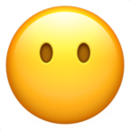
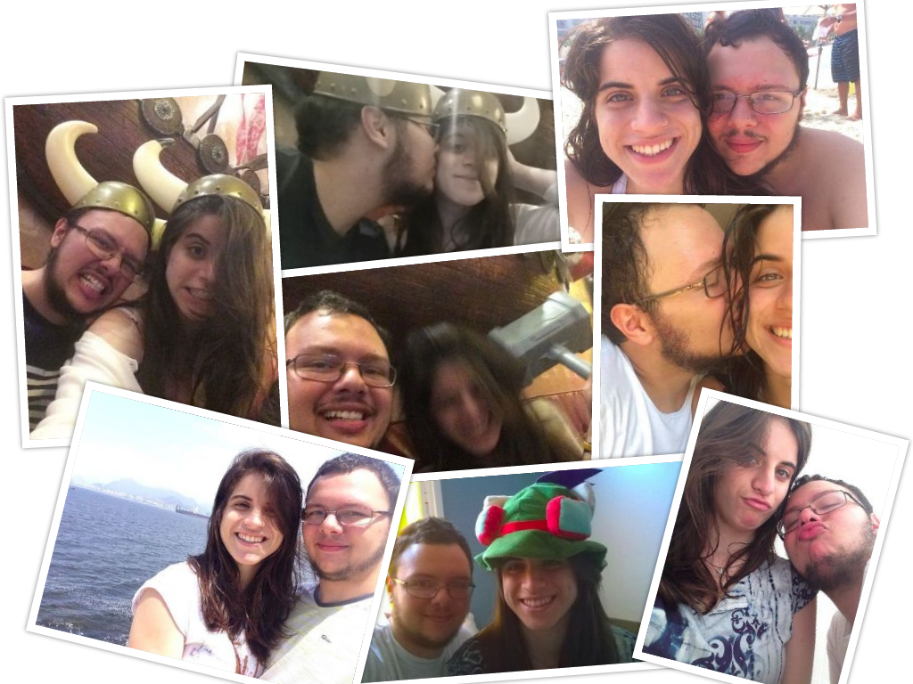
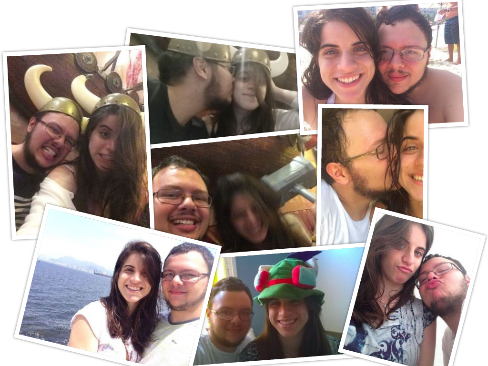

Olá, gatinha,
Finalmente dia 20 de Dezembro! Se colocar no Google vai ver que um montão de coisas aconteceram nesse dia,
mas nenhuma delas é tão importante quanto a minha motivação para escrever isso para você!
Na realidade, pensei em infinitas maneiras de como escrever isso, de quais maneiras deveria fazer
e mais uma infinidade de outras perguntas que me lembram todo o dia de como sou inseguro com algumas coisas.
 Entretanto, acho que encontrei aqui o lugar certo para conseguir
dizer uma pequena parte - porque certas coisas são simplesmente imensuráveis - de tudo que você é e significa para mim...
Conheço-te a pouco mais de um ano e até hoje lembro daquela menina linda com um curativo enorme no
dedo. Momentos depois essa mesma menina estava dançando comigo no Just Dance (me ganhando) e nesse momento pensei: "nossa, preciso
conhecê-la.". Desde aquele dia conversamos afinco quase todos os dias, nos aproximamos. Trocamos presentes, músicas, danças; contamos
as situações engraçadas, estranhas, felizes e tristes que nos acontecia, assim como todos nossos medos e vitórias que surgiram.
Hoje, pouco mais de um ano depois, afirmo com toda certeza: aquela menina se foi.
Se foi para se tornar uma mulher madura, muito determinada, certa de suas capacidades e pronta para enfrentar a todos
os seus medos, mas, da menina, ficou aquele sorriso gostoso que você sempre dá quando nos vemos, deixou esse
coração que é impossível de guardar em uma caixinha de tão enorme e bondozo que é. Rimos, brigamos e implicamos um com o outro,
mas nunca sem deixar qualquer pontinha sem ser acertada. Chamei-te dos mais diversos nomes - de monstrinha à amor - e você respondeu
a todos deles com muito carinho. Enfim, fizemos muitas coisas e sou agradecidos por cada uma delas.
Enrolei esse montão só para dizer que hoje é seu aniversário, dia que você merece receber muitos e muitos
mimos e ser mais amada do que já é. Assim, desejo muito seu sucesso, saúde, amor e
carinho para sua vida, muito, muito mesmo! Quero poder ter a honra de continuar ao seu lado, escutar seus choros,
comemorar suas vitórias e poder te amar muito mais e por muito mais tempo.
Quando você estiver lendo isso provavelmente você já recebeu seu quadro e sua plantinha,
provavelmente já gritaram a plenos pulmões "surpresa!!!" (espero muito que goste) e com muita certeza já disse que você é
uma pessoa mais que especial na minha vida, afinal faço isso algumas vezes ao dia hahaha Sei que não chega nem um
pouquinho perto, mas essas foram algumas formas de tentar agradecer tudo que você fez e faz por mim todos os dias.
Você é a menina mais especial da minha vida e o amor que tenho por você é muito diferente de
qualquer outro e por isso não posso fazer nada além de ser profundamente agradecido.

Vítor Lourenço,
20 de Dezembro de 2016.
 

 by:
by: